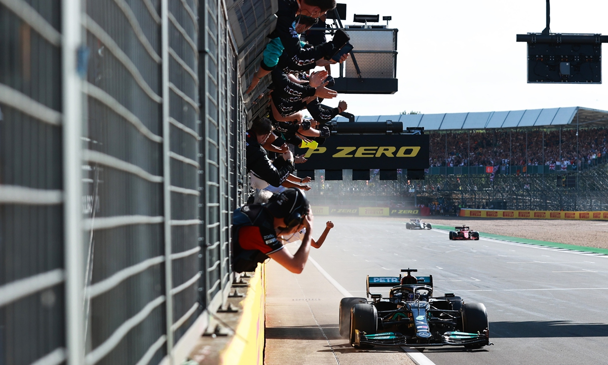
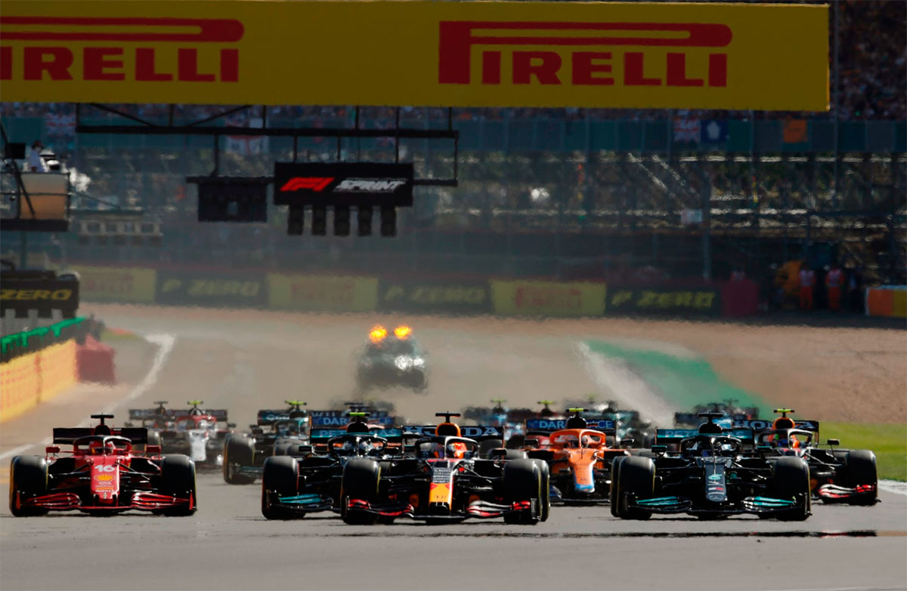
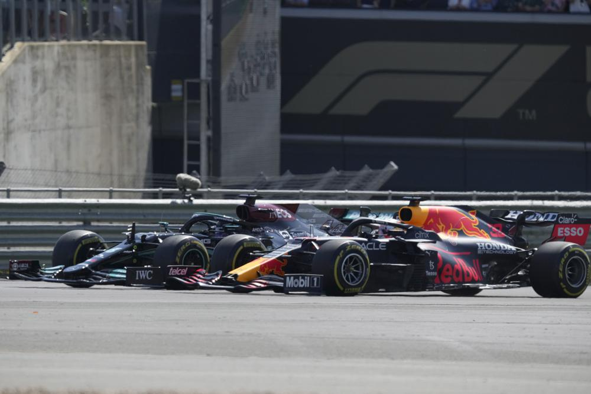
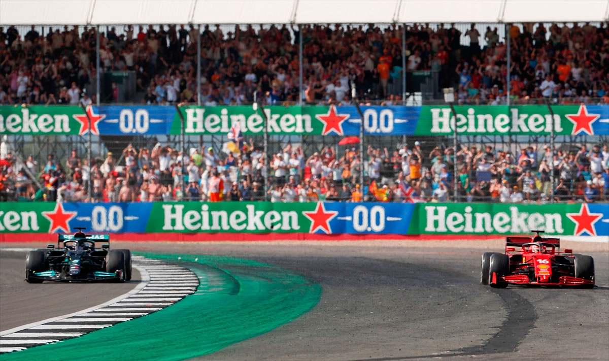
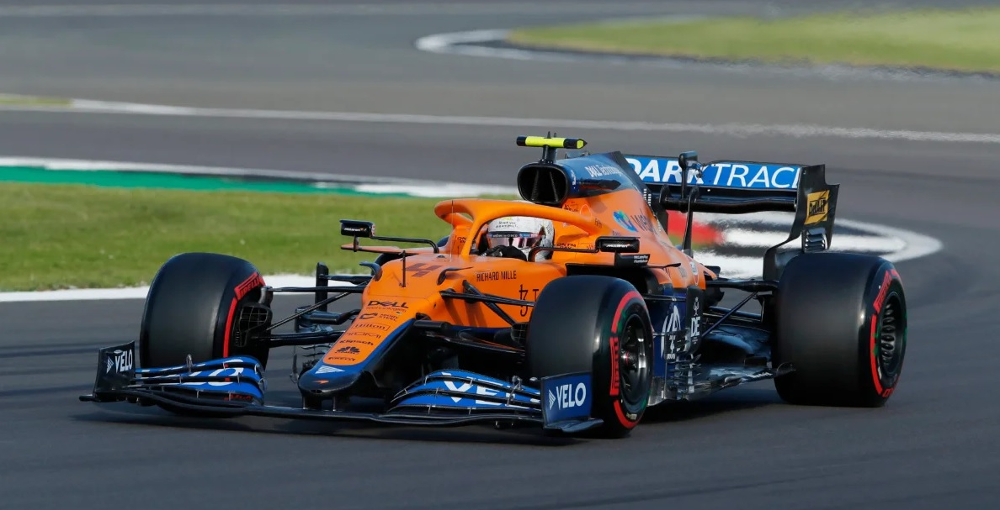
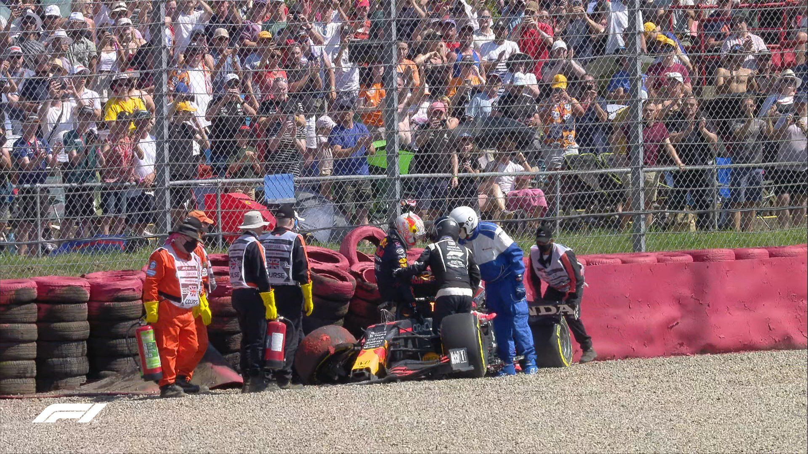
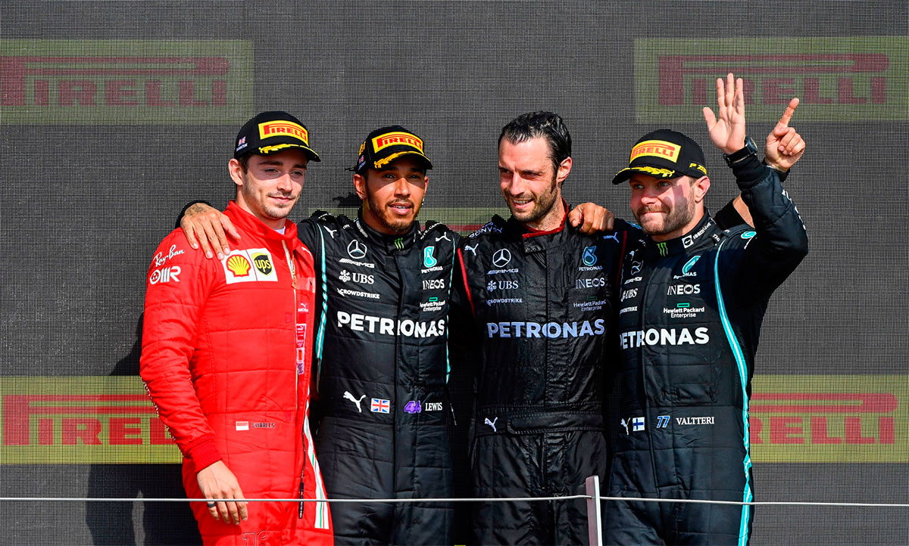

HERÓI LOCAL APESAR DO CHOQUE CONTROVERSO

A oitava vitória de Lewis Hamilton no Grande Prêmio da Grã-Bretanha o deixou eufórico. No entanto, o choque com Max Verstappen desencadeou fúria na equipe Red Bull.
ALEX KALINAUCKAS
Há algo especial sobre Charles Leclerc e Silverstone. Em 2015, ele venceu como novato na Fórmula 3 Europeia; um ano depois, fez sua estreia no fim de semana de F1 durante os treinos livres pela Haas; em 2017, apesar de um incêndio nos freios antes da corrida e de perder o espelho retrovisor, venceu a corrida de Fórmula 2; e em 2019 conquistou o pódio após uma batalha com Max Verstappen. No ano passado, com um péssimo SF1000 da Ferrari, terminou em terceiro em meio ao drama do GP da Grã-Bretanha e foi excelente novamente, garantindo o quarto lugar no GP do 70º aniversário, quando nenhum incidente ocorreu com os líderes. No último domingo, Leclerc quase venceu o GP da Grã-Bretanha de 2021, sua excelente forma durante todo o fim de semana foi recompensada com a liderança da corrida após a controversa batida entre Max Verstappen e Lewis Hamilton na primeira volta. Ele teria sido um vencedor totalmente merecido, mesmo sem seus esforços extras para lidar com um motor debilitado. No entanto, não foi suficiente para desafiar o campeão mundial apesar de ter sido penalizado. Esta é a história de como Leclerc quase conquistou uma vitória, que acabou indo para Hamilton - para alegria dos fãs locais e a fúria da Red Bull.
FERRARI RECUPERA RITMO DE QUALIFICAÇÃO
"Se olharmos para a Áustria", explicou o chefe da equipe da Ferrari, Mattia Binotto, depois que a corrida de 52 voltas em Silverstone acabou, "Lando Norris estava no pódio fazendo uma corrida fantástica. Mas o ritmo da nossa corrida na Áustria foi muito semelhante ao dele - simplesmente ficamos presos no tráfego. Estar à frente desde a classificação e na largada é fundamental". Leclerc atendeu a esses requisitos ao ficar com o melhor do resto na classificação "normal", estabelecendo a quinta volta mais rápida e depois subindo para o quarto lugar quando Sergio Perez perdeu seu melhor tempo no Q3 por correr exagerar na curva de Stowe. Então, Leclerc teve uma corrida sprint solitária, se ajudando do Alpine de Fernando Alonso que atrapalhou o progresso da McLaren e de Perez que caiu em seu Red Bull. Essas duas excelentes performances fizeram com que ele largasse em quarto novamente para o Grande Prêmio de domingo, o que imediatamente se transformou em terceiro lugar quando Valtteri Bottas foi cauteloso na largada. Então, Leclerc disparou através pela Abbey e Village confortavelmente seguindo Verstappen e Hamilton, e teve uma vista privilegiada do que aconteceu em seguida.

O ACIDENTE ENTRE OS CANDIDATOS AO TÍTULO
Verstappen manteve a primeira posição na largada, mas Hamilton se aproximou da Red Bull na curva Abbey e o pole position teve que colocar seu carro nas zebras e quase saiu da pista. Em seguida, parecia que eles bateram rodas na reta Wellington, no final da qual Hamilton atacou por fora e Verstappen espertamente colocuo por dentro para voltar à frente. Mas essa decisão o levou para fora na curva Brooklands e ele teve que fazer uma trajetória apertada para a Luffield, o que permitiu a Hamilton ter uma saída mais rápida e chegar na zona de vácuo de Verstappen na reta dos pits. Na Copse, o momento crucial da corrida - e o primeiro grande ponto de tensão na disputa pelo emocionante título de 2021 ocorreu. Hamilton lamentou "não ter aproveitado a oportunidade que havia pelo lado direito" de Verstappen na corrida de classificação, onde atacou por fora na primeira volta, então desta vez mergulhou por dentro do Red Bull, mesmo quando Verstappen se posicionou para cobrir essa linha. Isso o deixou próximo do muro dos pits e três quartos à frente de seu rival no ponto de entrada da Copse. Hamilton manteve sua trajetória. Verstappen também. O resultado foi um drama esportivo de alto nível. A roda dianteira esquerda do Mercedes bateu na traseira direita do Red Bull e Verstappen foi jogado para fora e colidiu a 51g, lado a lado com a barreira de pneus do lado de fora. A partir daí, ele saiu cuidadosamente dos destroços, indo mais tarde de helicóptero para o hospital de Coventry para exames adicionais, logo foi liberado. Hamilton desacelerou e Leclerc assumiu uma liderança surpreendente se aproximando da Maggotts, com a corrida sendo suspensa - primeiro pelo carro de segurança - quando o Ferrari chegou na curva Chapel. A corrida, que acabara de entrar na segunda volta, foi então interrompida por quase 30 minutos. "Com o incidente com o carro de Max, tendo perdido a telemetria devido gravidade do acidente, nem a FIA nem a equipe puderam confirmar o status do ERS dele", explicou o diretor de prova da F1, Michael Masi. "Então, mesmo que a luz estivesse verde, seguimos uma abordagem supercautelosa e enviamos dois membros da equipe, o que está dentro dos protocolos que temos, para verificar o carro e garantir que ele estivesse seguro. E depois disso, foi a óbvia reparação que teve que ser feita nas barreiras." Inevitavelmente, ambos os lados discordaram sobre quem foi o culpado pelo choque. "Pareceu apenas um movimento desesperado de Lewis", disse o chefe da equipe da Red Bull, Christian Horner. "Foi um contato da roda dianteira esquerda com a traseira direita, então não foi significativamente lado a lado." "Quando ninguém está disposto a ceder, esse tipo de situação pode acontecer", refletiu o seu colega da Mercedes, Toto Wolff. "Mas, para mim, quando um não quer, dois não brigam."

LECLERC DOMINA A RELARGADA E HAMILTON TEM SORTE APÓS INCIDENTE
De acordo com o engenharo de pista da Mercedes, Andrew Shovlin, o contato de Hamilton com Verstappen havia "danificado a roda" do lado esquerdo dianteiro, o que "teria sido um abandono se não fosse a bandeira vermelha". Como resultado, a Mercedes teve a chance de trocar a roda, colocar um novo conjunto de pneus médios e enviá-lo para a segunda largada atrás de Leclerc e Bottas - com o único outro dano, também consertado durante a bandeira vermelha, sendo um sensor de temperatura do pneu em sua asa dianteira que "tinha se soltado e estava balançando", segundo Shovlin. Quando as luzes se apagaram novamente, Leclerc liderou Hamilton com facilidade, feliz por seus "engenheiros terem feito um trabalho incrível nas últimas corridas" e agora "termos desempenhos de largada muito bons". Leclerc se afastou para que sua vantagem fosse de 1,2 segundos no final da primeira volta completa - a quarta. Mas Hamilton, foi penalizado em 10s no início da próxima volta por causar o choque com Verstappen, estava na espreita. E ainda era Silverstone, super-rápido e escaldante ao sol, com a Ferrari apenas três corridas depois de um GP da França em que Leclerc havia sido ultrapassado depois de lutar horrendamente com o desgaste dos pneus dianteiros. A questão era por quanto tempo Leclerc poderia resistir ao mestre da gestão de pneus. E ele respondeu inicialmente de forma brilhante.
FERRARI SURPREENDE COM DESEMPENHO DE PNEUS MÉDIOS
Na corrida de Silverstone, os pilotos tiveram a liberdade de escolher qualquer composto de pneu para o início da prova, graças às novas regras do fim de semana de corrida sprint. Todos os pilotos, exceto Perez, que começou do pitlane com pneus duros, escolheram os Pirellis médios para a primeira parte da corrida. Leclerc notou que o carro estava incrível com esse composto: "Fomos surpreendentemente bons com os pneus médios e éramos muito rápidos". Isso foi demonstrado ao segurar Hamilton e, em seguida, obter uma vantagem de 2,3s após a volta 26 de 52. Hamilton teve que entrar nos boxes na volta seguinte devido ao desgaste excessivo do pneu dianteiro esquerdo. Binotto explicou que a Ferrari trabalhou muito para melhorar a preservação e desgaste dos pneus desde Paul Ricard. No entanto, Leclerc sugeriu que a equipe ainda não tinha certeza do motivo pelo qual era tão forte na gestão dos pneus em Silverstone. De qualquer forma, o progresso foi notável. Além disso, a performance de Leclerc foi ainda mais impressionante por ter lidado com um problema de confiabilidade: na volta 15, ele relatou um corte no motor. Ele ficou agitado considerando o episódio do Bahrain há dois anos e em casa em Mônaco neste ano. Foi identificado um problema no mapeamento do motor, mas a equipe conseguiu resolver a situação. Hamilton chegou a se aproximar a 0,8s na volta 17, mas Leclerc conseguiu se afastar novamente apesar de mais um corte de energia. A Ferrari pôde deixar Leclerc por mais duas voltas porque Hamilton teve que cumprir sua penalidade nos boxes, caindo para quarto lugar atrás de Norris. Sainz Jr, companheiro de equipe de Leclerc, teve um problema com um sensor de pistola de roda em sua parada, mas isso não ocorreu na parada de Leclerc.

TRÁFEGO E UM "ESTALO" CUSTAM A LECLERC A VITÓRIA
Quando Leclerc emergiu com os pneus duros de borda branca, ele tinha uma vantagem de 7,7s no final da volta 30 sobre Bottas – que havia perdido a posição para Norris na segunda largada, de maneira quase idêntica à saída inicial contra Leclerc. O finlandês então recebeu o segundo lugar de presente quando uma porca de roda transversal no pneu traseiro direito na parada de Norris significou que a Mercedes o chamou imediatamente para para os pits, mesmo que ele tenha que lutar brevemente e com sucesso contra o Alpine de Fernando Alonso em sua saída. Mas o mais importante para Leclerc na volta 30 era a vantagem para Hamilton: 12,9s. Nas próximas 19 voltas, o britânico virou e, média de 0,634s mais rápido que o líder – 0,878s mais rápido depois de ter sido ordenado a ultrapassar Bottas na Stowe na volta 40, tendo já passado Norris com uma ultrapassagem bastante mais simples à frente da Copse nove voltas antes. "Honestamente, Charles não estava na minha mente quando saí", disse Hamilton depois de garantir sua quarta vitória da temporada de 2021. "Eu estava tentando ver se podia alcançar os carros à frente, um por um. Então vi que estava me aproximando dele, mas estava pensando, 'quando chegar até ele, meus pneus estarão acabados com esse ritmo'". Mas era na verdade Leclerc que estava tendo problemas com os pneus duros "mais frágeis", especialmente sempre que ele "começava a pegar tráfego" enquanto continuava na corrida, com "meu engenheiro me dizendo o ritmo de Lewis com os pneus duros, e eu estava tipo 'isso é rápido'. Eu estava dando 200%." "Atrás [do tráfego], eu podia sentir que a traseira do carro não estava tão estável como eu queria", acrescentou. "E isso fez com que perdêssemos um pouco o ritmo que tínhamos antes." Na metade da volta 49, Hamilton estava dentro da zona do DRS, que ele usou para se aproximar ainda mais de 0,8s no final daquela volta na seguinte. Leclerc e Hamilton correram pela reta dos boxes e novamente o momento chegou na Copse.
"VI QUE ESTAVA ME APROXIMANDO, MAS PENSEI QUE, QUANDO CHEGASSE ATÉ ELE, MEUS PNEUS JÁ ESTARIAM ACABADOS"
"Meu coração quase parou quando entrei pelo lado interno", disse Hamilton, "porque pensei que a mesma coisa que aconteceu comigo e Max poderia se repetir". Mas desta vez Hamilton estava totalmente na linha de traçado ideal na rápida curva para a direita e, mesmo que Leclerc tenha seguido sua própria trajetória assim como Verstappen havia feito mais cedo nesse dia dramático, eles não chegaram a se tocar. Por um momento, parecia que o monegasco desafiaria Hamilton novamente - pelo menos temporariamente. Mas de repente a vitória foi perdida, ou ganha por Hamilton, dependendo da perspectiva. "Eu sabia que Lewis estava pelo lado interno", disse Leclerc. "Deixei um espaço e acho que tinha ficado à frente, mas infelizmente, no finalzinho da curva, tive uma perda de tração." A Ferrari deslizou para a esquerda para fora da pista, bateu na zebra e voltou atrás de Hamilton, com a Mercedes, em seguida, abrindo com facilidade para uma margem de vitória de 3,9 segundos, com Bottas - sem um sistema de bebidas funcionando durante toda a ensolarada corrida - 7,2 segundos atrás. "Charles foi muito respeitoso em termos de deixar espaço", disse Hamilton sobre a batalha pela vitória na corrida. "Ele se manteve comprometido e fez uma linha mais ampla. Ele quase manteve a liderança e foi uma grande corrida. Naquele momento, recuei em um ponto apenas para ter certeza de que não iríamos nos encontrar. Em um mundo perfeito, isso teria acontecido na primeira tentativa, mas... hora diferente, lugar diferente, piloto diferente." Wolff considerou que a Mercedes ainda estava "um pouco abaixo do desempenho" em comparação com a Red Bull, mesmo com as atualizações técnicas que trouxe para o GP da Grã-Bretanha, e sentiu que "quem estiver à frente [após Copse na primeira volta] provavelmente vai levar até o fim". Por essa razão, por mais que a performance de Hamilton tenha sido incrível na segunda parte da corrida e depois de tudo o que aconteceu naquela primeira volta, o verdadeiro vencedor moral de Silverstone 2021 foi claramente Charles Leclerc. "Estava realmente focado em todas as voltas", refletiu o valente segundo colocado, que não achou que o problema do corte do motor foi a causa da sua derrota. "Não acho que tenha cometido um grande erro em nenhuma volta. Mas, no geral, mesmo quando tudo parecia bom, Lewis foi muito mais rápido do que nós com os pneus duros."

FORTE MCLAREN PERDE CHANCE DE SUBIR AO PÓDIO
Uma possível primeira subida ao pódio na Grande Prêmio Britânico desde 2010 parecia possível para a McLaren no início, após o incidente entre Verstappen e Hamilton, mas problemas no pitstop tiraram Lando Norris da jogada. Um forte começo de corrida ajudou Norris a subir para o terceiro lugar, e ele bravamente conseguiu segurar Valtteri Bottas. No entanto, Norris foi forçado a esperar mais tempo para trocar seus pneus médios pelos compostos duros, perdendo quatro segundos para Bottas devido a uma porca da roda. O piloto da Mercedes aproveitou a demora e fez sua parada na volta seguinte, retornando à frente de Norris, embora os dois tenham ficado brevemente próximos. Bottas rapidamente ultrapassou Alonso que ainda não tinha parado para abrir uma vantagem suficiente entre si e o jovem de 21 anos. Enquanto isso, Daniel Ricciardo teve uma batalha longa e emocionante com Carlos Sainz pela quinta colocação, embora tenha recebido uma boa dose de sorte relacionada ao pitstop para terminar à frente. Ricciardo tinha a vantagem antes dos pitstops, mas a parada mais longa do piloto da Ferrari devido a um problema no sensor da pistola de roda eliminou a vantagem, deixando Sainz tentando passar Ricciardo no final sem sucesso, mesmo com o auxílio do DRS. "Com o pneu duro, ficou ainda mais difícil ultrapassá-lo", lamentou Sainz. "Estava subesterçando muito mais e eu não conseguia acompanhá-lo em alta velocidade".

CHEFES DA RED BULL FURIOSOS COM O CHOQUE DE VERSTAPPEN
A alta gerência da Red Bull expressou rapidamente e em voz alta suas opiniões sobre o choque entre Max Verstappen e Lewis Hamilton assim que ficou claro que o holandês escapara de ferimentos graves em seu acidente na Copse na primeira volta da corrida. O chefe da equipe, Christian Horner, e o diretor esportivo da equipe, Jonathan Wheatley, ambos ligaram para o diretor de prova da Fórmula 1, Michael Masi, para expressar sua raiva pelo acidente, com Masi apontando a Red Bull para os comissários em resposta. Masi fez o mesmo com o chefe da equipe da Mercedes, Toto Wolff, que disse ter enviado um documento a Masi que sugeriu que precisava ser considerado ao avaliar Hamilton por uma possível penalidade. A raiva da Red Bull então transbordou para a mídia durante a interrupção de 30 minutos da bandeira vermelha, com Horner acusando Hamilton de "pilotar sujo" na cobertura da Channel 4 do Reino Unido, e o consultor de esportes a motor da Red Bull, Helmut Marko, dizendo à Sky Germany que achava que o campeão mundial "deveria ser punido com uma suspensão ou algo assim" por causa do "comportamento negligente a perigoso". Hamilton recebeu uma penalidade de 10 segundos a ser cumprida em sua parada nos boxes, mas conseguiu lutar de volta na corrida reiniciada para vencer Leclerc da Ferrari. Quando questionado se ainda estava com raiva após a corrida em Silverstone, onde Sergio Perez, no segundo Red Bull, terminou em 16º depois de uma estratégia de três paradas incomum e um choque tardio com Kimi Raikkonen na Club, Horner disse: "Bem, colocar um colega piloto no hospital, destruir o carro, receber uma penalidade insignificante, mas ainda assim vencer o GP, não parece muito uma penalidade." Mas Horner ficou irritado com Wolff por ir visitar os comissários durante a bandeira vermelha, dizendo: "Não acho que os comissários devam ser interferidos." Wolff disse que "dei minha opinião" e que "já fui aos comissários muitas vezes na minha vida".
